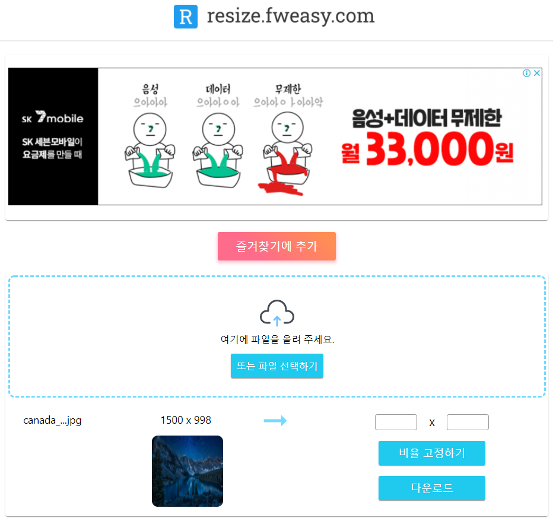
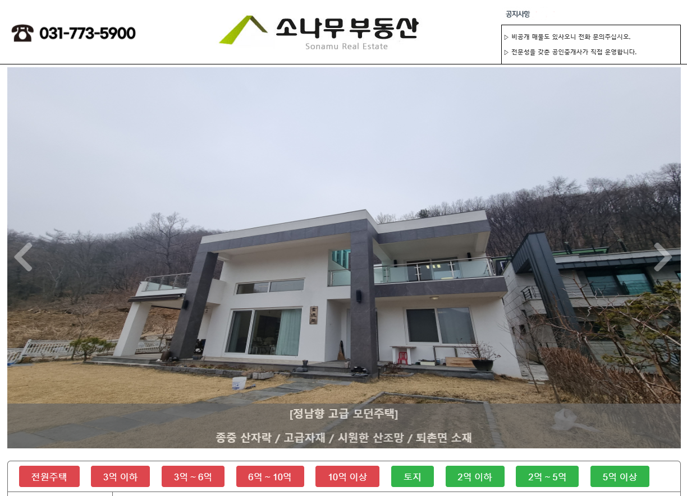
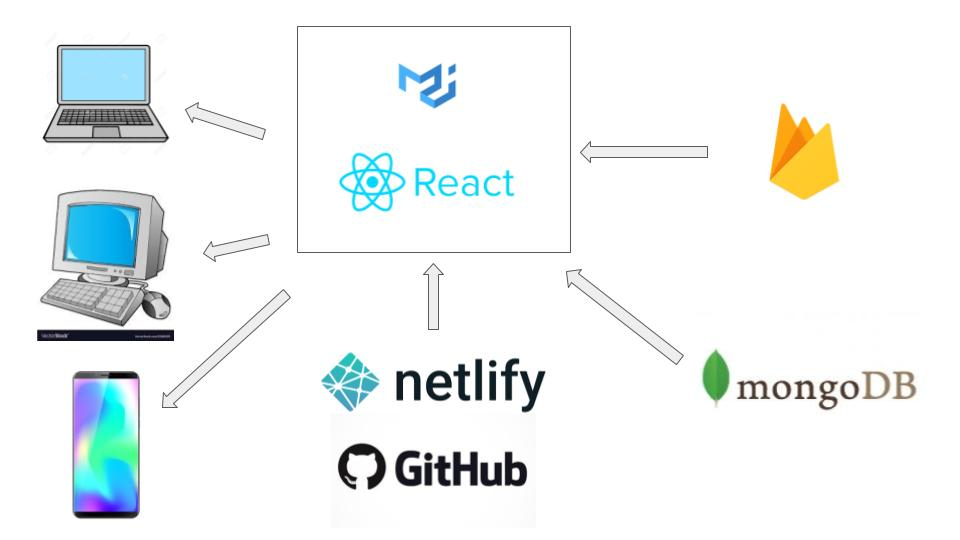

- 2021-12-07 - 멘사 합격했습니다.
- 2019-10-01 - 토익 최고 점수(990/990) 및 OPIc 최고 등급(AL) 달성
- 2019-08-24 - 컴퓨터공학부 졸업했습니다.
전진혁
자바스크립트 개발자
okjinhyuk93@gmail.com, [이력서(old)]
새 소식
소개
자바스크립트 기반 프론트엔드 개발자입니다.
Node / AWS / Linux 기반의 백엔드도 개발 가능합니다.
Node / AWS / Linux 기반의 백엔드도 개발 가능합니다.
기술 스택
- 경험 목록
- 프론트엔드 기술 : HTML, CSS, React.js, Vue.js, jQuery, Webpack, Babel
- 백엔드 기술 : AWS, Linux, Node.js, Netlify, ExpressJS, MongoDB, Nginx
- DevOps: Git/Github, Unix/Linux Systems - 프로그래밍 언어
- 자신있는 : Javascript, Web(HTML,CSS)
- 익숙한 : 자바, C++(C)
- 사용 경험 : 파이썬, 매트랩, 스칼라
학력
서울대학교
컴퓨터공학부 (2011년 3월 ~ 2019년 8월 )
서울대학교
기계항공공학부 (복수전공 ) (2011년 3월 ~ 2019년 8월 )
세종과학고등학교
서울, 대한민국 (2009년 3월 ~ 2011년 2월 )
서울대학교 영재교육원
물리 분과, 서울, 대한민국 (2007년 3월 ~2009년 1월 )
업무 경험
소나무부동산 웹 (PC, Mobile)/CMS 개발
웹 풀스택 개발 (2020년 11월 ~ 2021년 2월 )
직구프라이스 (Jikguprice.com)
웹 서비스, 창업자 (2017년 1월 ~ 2019년 2월 )
유엔군 사령부 (United Nations Command)
군사정전위원회, 작전과 부사관 (병장 ) (2013년 12월 ~ 2015년 9월 )
선택된 프로젝트
프론트엔드 기반 image resizing 웹사이트 제작
fwcorp
2020년 8월 ~ 2020년 7월
활용 기술
- React, React-router, Javascript Canvas
- vanilla CSS, polyfill, Netlify CI/CD
소나무부동산 웹사이트/Mobile/CMS 개발
fwcorp
2021년 2월 ~ 2020년 11월
활용 기술
- EJS, Expressjs, Mongoose, Multer
- Sharpjs, bcryptjs, MongoDB
- AWS EC2, AWS Backup, Winstonjs, Helmetjs
풀스택 SPA (React) 개발
fwcorp(MoodLog)
2020년 6월
활용 기술
- React.js, Redux, react-router, Material-ui, Netlify
- GCP, MongoDB, Mongoose, Expressjs, Nginx
- bcrypt, letsencrypt, certbot(SSL)
서버리스 SPA(Single Page Web Application) 개발
직구프라이스(Jikguprice)
2019년 3월 ~ 2017년 1월

활용 기술
- Vue.js, Materialize.css
- AWS Lambda, S3, Nodejs
- Currencylayer, Axios, CheerioJS
Server - Client RMI Whiteboard
서울대학교
2016년 6월 ~ 2016년 5월

활용 기술
- JAVA
- JAVA RMI
- JAVA GUI
리눅스 커널 개발
서울대학교
2017년 6월 ~ 2017년 3월

활용 기술
- Linux
- Linux Kernel 3.4
- Artik 10 (ARM Linux)
자동 스윙 로봇 설계 및 제조
서울대학교
2013년 3월 ~ 2013년 6월
활용 기술
- Solidworks
- Interactive physics
수상 내역
기타 관심사
이벤트
기술과 미래에 관한 강연
선운초등학교, 광주, 대한민국
2017년 12월
선운초등학교의 선생님 덕분에 좋은 기회로 초대받았습니다. 2시간의 강연 시간 동안 저와, 요즘 기술 및 도전에 관해 학교의 6학년 학생들에게 강연할 수
있었습니다.
[사진]